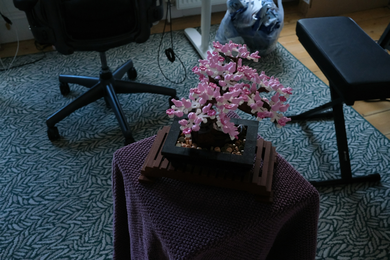
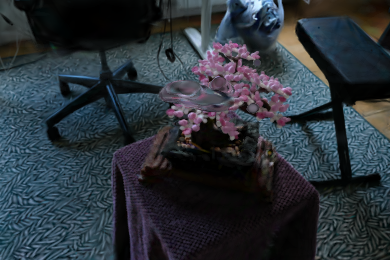
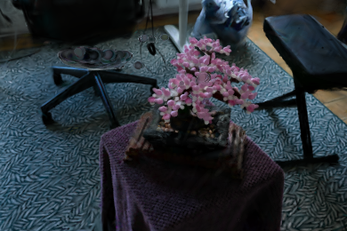
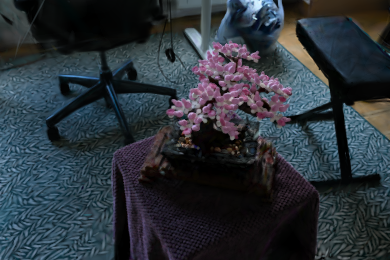

Reference

Source photograph
We compare final held-out test scores against Gaussian within the same scene and seed. The eight synthetic scenes use 8,000 steps and a 100k splat cap; the nine real scenes use 20,000 steps and a 200k cap. Their different settings mean the two matrices should be read separately.
Each plotted value is the mean of three paired seed differences in a scene: alternative kernel minus Gaussian. Positive ΔPSNR favors the alternative. LPIPS is reversed, so a negative ΔLPIPS is better. Scenes, rather than individual camera views, are the units used to discuss broader patterns. See the full PSNR, SSIM, and LPIPS tables ↗
At the fixed final checkpoint, linear improves mean PSNR in only two of eight synthetic scenes. Its average scene difference is −0.059 dB, and mean LPIPS is 0.0018 higher than Gaussian. Hotdog is the clearest synthetic PSNR gain (+0.221 dB); lego has the largest loss (−0.255 dB).
On real scenes, linear improves mean PSNR in four of nine scenes and 13 of 27 paired seeds. The mean scene gain is +0.166 dB, but the median is −0.042 dB. Bonsai (+0.992 dB) and room (+0.524 dB) raise the mean; five scenes have negative mean PSNR differences. Mean LPIPS improves in only two real scenes.
The linear shape can help particular scenes or seeds, but these data do not support a dependable improvement under the tested budgets. Its real-scene average is sensitive to a few positive scenes.
In the synthetic matrix, polynomial is worse than Gaussian on mean PSNR, SSIM, and LPIPS in all eight scenes and all 24 paired seeds. Its mean scene PSNR difference is −0.397 dB; mean LPIPS is 0.0057 higher. The strongest synthetic PSNR loss is hotdog (−0.928 dB).
In the real matrix, polynomial improves mean PSNR in seven of nine scenes and 23 of 27 paired seeds. Mean SSIM improves in all nine scenes and LPIPS in eight. Its mean scene PSNR difference is +0.579 dB, while the median is just +0.084 dB: bonsai (+3.123 dB) and kitchen (+1.098 dB) account for much of the average. Garden (−0.036 dB) and treehill (−0.018 dB) are near ties.
Several vegetation-heavy scenes show small or inconsistent PSNR changes, but bonsai is a strong exception. Scene texture has not been isolated as a cause. The synthetic-to-real reversal could come from scene content, resolution, background, capacity, training duration, initialization, or other settings that change together.
Each mini-chart has its own horizontal scale, shown above its bars. Compare signs and exact dB labels across charts, not bar lengths across different panels.
DSCF5648 · seed 17 · step 20,000. All four panels use the same camera and image size. A floating, disc-like artifact appears above the pot in the Gaussian render; it is absent in the quadratic render. The linear render has another visible artifact to the left. This is a validation view for qualitative inspection, not a held-out test view used for the reported final scores.

Source photograph

Floating disc above the pot

Artifact visible to the left

Prominent disc absent
Open a panel for the full-size image. This view shows a difference, but one image cannot establish its cause or how often it occurs. Check other cameras and seeds before generalizing.
The table gives the range of scene-level mean percentage changes relative to Gaussian in the real-scene matrix. Render and training times use only seed pairs run on the same GPU model; tile-pair counts use all paired seeds. Negative time means faster. The synthetic summaries lack GPU-model identities, so their elapsed times cannot support a matched-hardware comparison.
| Kernel | GPU-matched seed pairs | Render time | Training time | Tile pairs | Sampled train peak memory |
|---|---|---|---|---|---|
| Loading cost summaries… | |||||
Training is modestly slower in the matched real-scene pairs. Rendering switches sign by scene, so the linear kernel has no stable speed advantage here.
It produces fewer tile-pair records in every real scene, yet render time still ranges from faster to slower. Bonsai illustrates the mismatch: about 3.3% fewer tile pairs alongside a 32.0% longer render time on the matched pairs. Tile records measure one kind of work, not total elapsed cost.
Kernel support, learned scale and opacity, camera view, and image size determine which splats overlap which tiles. Equal final splat counts can produce different tile-pair counts.
The renderer traverses depth-ordered tile records, evaluates each candidate's alpha, composites visible color, and may stop when transmittance is low. The kernel also changes per-candidate math (exponential, square root, or polynomial). A tile pair is not a count of pixel evaluations or early exits.
Training adds backward rendering and optimizer updates, plus densification, pruning, validation, and snapshots. Each kernel can learn different splat geometry, opacity, and growth trajectories, changing later work despite the same step budget and final cap.
Test render timing includes tile building, rendering, and copying the image to the CPU: the median of five repetitions per view, then averaged across views. GPU model, memory behavior, system load, and run-to-run variation also affect time. These logs do not isolate the stage responsible for a particular gap.
All 81 real runs end at the 200k splat cap. Matched sampled peak training memory is unchanged at the precision of the 250 ms NVML sampling; this cannot rule out short-lived peaks. Several scene-level timing estimates use only one or two GPU-matched seeds.
The explorer plots the mean PSNR of the same eight reserved cameras every 500 steps. The wiggles therefore do not come from sampling new validation views. Training changes splat positions, scales, colors, and opacities, while densification and pruning change the active set. Some checkpoint-to-checkpoint variation is expected; the chart also zooms its vertical axis to the values shown, making small movements more visible.
A plateau is not automatically a failure to converge. Still, some runs have meaningful late declines. Across 81 real runs, 10 finish more than 0.5 dB below their best validation checkpoint, and two finish more than 1 dB below. Bonsai Gaussian seed 27 peaks at step 8,500 and ends 2.96 dB lower; bonsai linear seed 17 ends 1.14 dB below its best. The fixed 20k checkpoint remains the prespecified test endpoint, but those gaps make some kernel differences sensitive to optimization stability.
A useful next experiment would vary one budget or training setting at a time, keep scene/seed/camera splits paired, inspect per-view validation and image crops, and reserve held-out test views for the final selected comparison.
Synthetic and real matrices differ in scene type, resolution, background, initialization, capacity, duration, schedule, and radius guard. Their opposite polynomial outcomes cannot be assigned to one factor.
Eight synthetic scenes, nine real scenes, and three selected seeds per scene make this exploratory. Camera views within one scene are correlated and cannot be counted as independent scene replications.
All kernels are scored at fixed steps, even when validation peaks earlier. A best-checkpoint policy or kernel-specific training schedule could change the ranking and needs a new, prespecified comparison.
PSNR, SSIM, and LPIPS summarize different image properties. Matched reference/render crops and per-view error inspection are still needed before attributing gains to edges, texture, blur, or foliage.
Timing depends on GPU model and this renderer's implementation. Some matched timing estimates have few pairs; sampled memory can miss transients. Results do not establish a hardware-independent speed ranking.
We did not sweep higher capacities, longer schedules, alternate backgrounds, resolutions, or tuned hyperparameters for each kernel. Rankings could change under those constraints.
Linear has mixed quality and cost. Polynomial is consistently worse in the tested synthetic matrix but often better in the tested 200k real-scene matrix, with uneven gains and no reliable speed win. The result is a description of this renderer and these constraints, and a guide to the next controlled experiments.
Inspect the full resultsScene-level quality and cost charts are calculated from the bundled real-run summaries and validation logs and synthetic test summaries. The validation-gap counts also use the logged real-scene curves.